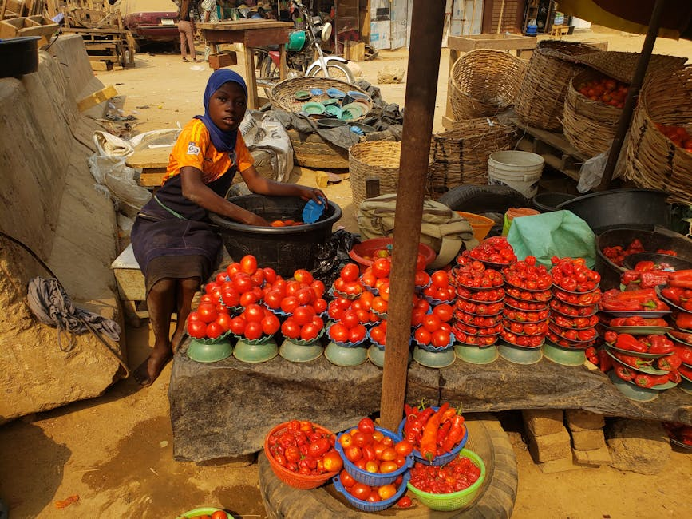

Building inclusive voice technologies in the 3 Indonesian Languages Balinese, Bugis and Minangkabau through open language datasets

FAIR Forward and Prosa.ai collected AI training data and trained models for three digitally underrepresented languages of Indonesia: Balinese, Bugis and Minangkabau. Existing works on underrepresented languages mostly focus on machine translation and simple language understanding tasks, such as sentiment analysis and topic classification. More complex tasks such as open-domain dialogue and dialogue summarization, are still left behind for these underrepresented languages which leads to a poor evaluation suite for assessing the capability of large language models (LMs) in these underrepresented languages. Mitigating this limitation, we introduce NusaDialogue, the first underrepresented languages datasets consisting of manually annotated dialogue along with its summary.
NusaDialogue covers 3 underrepresented languages under the Malayo-Polynesian languages group, i.e., Minangkabau (min), Balinese (ban), and Buginese (bug), each consisting of 10,000 dialogue and summary pairs. The dialogues in NusaDialogue encompass numerous topics including culture, occupation, politics, science, history, news, sports, religion, etc
Data characteristics
NusaDialogue covers 3 underrepresented languages under the Malayo-Polynesian languages group, i.e., Minangkabau (min), Balinese (ban), and Buginese (bug), each consisting of 10,000 dialogue and summary pairs. The dialogues in NusaDialogue encompass numerous topics including culture, occupation, politics, science, history, news, sports, religion, etc.
The non-translationese annotation nature makes NusaDialogue suitable for representing the actual day-to-day use of these underrepresented languages. In addition, we ensure that the dataset is annotated by a balanced number of male and female annotators to make the dataset represent a more balanced demography.
Also, a responsible AI Assessment was undertaken for this dataset / use case to help AI developers and project managers to identify, assess and mitigate potential harms and biases in AI. For methodology, see https://www.bmz-digital.global/en/news/ethical-crash-test-for-ai-how-to-navigate-the-road-to-responsible-innovation/
Model characteristics
[Auto-enriched from linked project resources]
Pretrained Model: IndoBERT-Nusa, a BERT language model fine-tuned from indobert-large-p2 on Balinese, Buginese, and Minangkabau data. Framework: PyTorch / HuggingFace Transformers. License: CC-BY-SA 4.0. Tasks: fill-mask, topic classification, language identification. Topic classification F1 scores: Balinese 84.23, Buginese 82.03, Minangkabau 86.30. Training Data: NusaTranslation dataset (~140,000 sentence pairs per language, Indonesian to target language). Dialogue Data: NusaDialogue provides ~10,000 dialogue-summary pairs per language (3 million+ words total) across 16 topic categories, annotated by 100 qualified native speakers. Code for AI Models: load via HuggingFace (`prosa-text/indobert-nusa`).
Source: https://huggingface.co/datasets/prosa-text/nusa-dialogue, https://huggingface.co/datasets/prosa-text/nusa-translation, https://huggingface.co/prosa-text/indobert-nusa
How to use
Supporting Minority Languages in the Digital Space:
The digital divide is often more pronounced for speakers of minority and underrepresented languages. Including these languages in summarization datasets helps bridge this gap, ensuring that digital platforms and technologies are accessible and beneficial to a broader range of linguistic communities.
Encouraging Linguistic Research
The creation of NusaDialogue can stimulate interest and research in linguistics, language preservation, and computational linguistics. This can lead to a better understanding of the unique linguistic features of these languages and the development of more tailored language technologies.
Addressing Bias and Fairness in NLP
Through NusaDialogue , there is an opportunity to address biases present in NLP systems that are often trained on data from dominant languages. This can contribute to the development of more fair and unbiased language technologies.
In conclusion, the social impact of NusaDialogue extends beyond technology to cultural preservation, education, inclusivity, and cross-cultural understanding. It has the potential to empower communities, promote linguistic diversity, and contribute to a more equitable and interconnected global society.
Datasets
Use cases
Additional resources
About
Powered by / Provided by: Prosa.ai
Catalyzed by: FAIR Forward - AI for All, GIZ
Financed by: BMZ
Authors: Prosa.ai / Balthas Seibold
Contact: Prosa AI (business@prosa.ai)